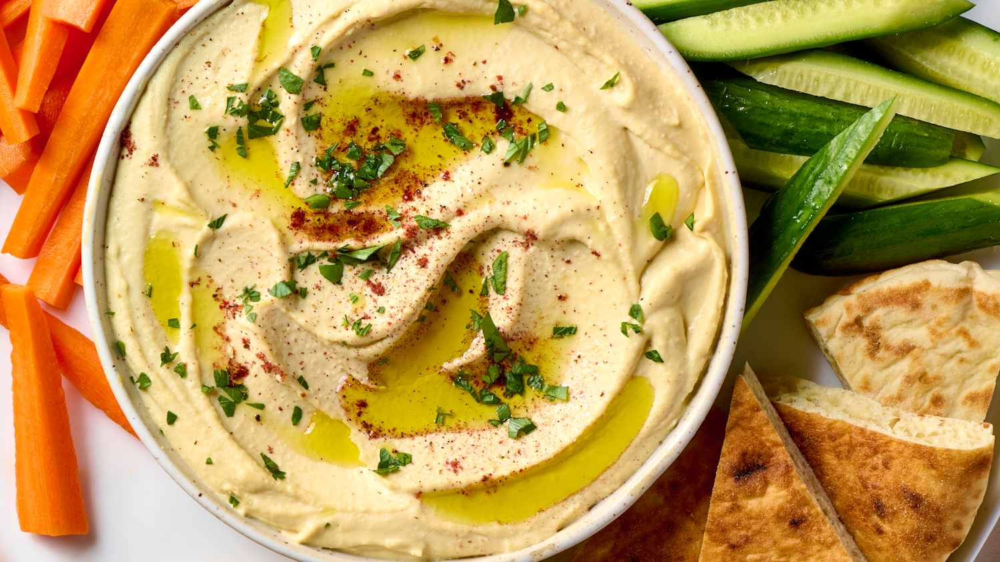

Hummus Recipe

Home
Hummus Recipe
Hummus is a creamy Middle Eastern dip made from chickpeas, tahini,
lemon juice, garlic, and olive oil. It is commonly served with pita
bread or fresh vegetables.
This homemade hummus is smooth, flavorful, and easy to prepare in just
a few minutes using a food processor.
Ingredients
- 1 can chickpeas
- 2 tablespoons tahini
- 2 cloves garlic
- 2 tablespoons lemon juice
- 2 tablespoons olive oil
- Salt
Steps
- Drain and rinse the chickpeas.
- Add all ingredients to a food processor.
- Blend until smooth.
- Add water if needed to reach the desired consistency.
- Serve with olive oil and paprika.